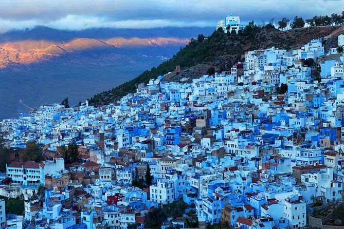

Welcome to the Blue City
Nestled in the Rif Mountains of northwest Morocco, Chefchaouen is a magical blue-washed town that feels like stepping into another world.
Known for its striking blue buildings, winding medina streets, and breathtaking mountain views, Chefchaouen offers visitors a unique blend of Moroccan and Andalusian culture.
Discover the charm of this peaceful mountain town, from its rich history and vibrant culture to its stunning natural surroundings and warm hospitality.
Quick Facts:
- Northwest Morocco
- Rif Mountains
- ~42,000 inhabitants
- Founded in 1471


Discover Chefchaouen

Discover Our Rich History
Rich History
Founded in 1471, Chefchaouen has a fascinating history influenced by Moorish exiles from Spain, Jewish refugees, and Spanish occupation.
Learn more
Experience Our Vibrant Culture
Vibrant Culture
Experience the unique blend of Berber, Arabic and Andalusian influences in the city's cuisine, crafts, music, and traditions.
Learn more
Explore with Our Local Guides
Guided Tours
Explore the medina, hike in the surrounding mountains, or experience local workshops with our knowledgeable local guides.
Book a tourVirtual Tour
Experience the magic of Chefchaouen from the comfort of your home with our interactive 360° tour of the city's most beautiful locations.
What Visitors Say
Follow Our Journey
Share your Chefchaouen experiences with us using #BlueChefchaouen or follow our Instagram for daily inspiration.


Where to Find Us
Located in northern Morocco, Chefchaouen is nestled in the Rif Mountains, about 110 km from Tangier and 250 km from Fes.

How to Reach Chefchaouen
By Air
Fly to Tangier Ibn Battouta Airport (TNG) or Fes–Saïss Airport (Fes), then take a bus or grand taxi to Chefchaouen.
By Bus
CTM and Supratours operate regular buses from major Moroccan cities to Chefchaouen.
By Car
Chefchaouen is accessible via well-maintained roads from Tangier (2 hours), Tetouan (1 hour), and Fes (4 hours).
By Grand Taxi
Shared grand taxis connect Chefchaouen with nearby cities like Tetouan and Tangier.
Frequently Asked Questions
There are several theories about why Chefchaouen's buildings are painted blue:
- The blue color was introduced by Jewish refugees in the 1930s, who considered blue to symbolize the sky and heaven.
- The blue acts as a natural mosquito repellent.
- The color creates a cooling psychological effect in the hot climate.
- Blue represents water, which is precious in the mountainous region.
The best time to visit Chefchaouen is during spring (March to May) and autumn (September to November) when temperatures are mild and comfortable for exploring. Summer (June to August) can be hot but still manageable, while winter (December to February) is cooler with occasional rainfall, but you'll enjoy fewer tourists.
We recommend spending at least 2-3 days in Chefchaouen to fully experience the city. This gives you:
- One day to explore the medina and its blue streets
- One day for a mountain hike or visit to nearby attractions like Akchour waterfall
- One day to relax, shop, and immerse yourself in the local culture
Yes, Chefchaouen is considered one of the safest cities in Morocco for tourists. The local population is friendly and welcoming to visitors. As with any travel destination, normal precautions should be taken regarding personal belongings and awareness of your surroundings, especially at night.
While Chefchaouen is relatively relaxed compared to other Moroccan cities, it's still respectful to dress modestly:
- For women: Clothing that covers shoulders and knees is recommended. Loose pants, long skirts, and tops that aren't too revealing are appropriate.
- For men: Shorts that reach the knee and t-shirts are acceptable.
- Comfortable walking shoes are essential as the medina involves lots of walking on uneven surfaces and stairs.
- In summer, light fabrics are best, while layers are recommended for cooler evenings and winter months.
Ready to Experience Chefchaouen?
Book a guided tour and discover the magic of the Blue Pearl with local experts who know every corner of this enchanting city.
Get Chefchaouen Updates & Travel Tips
We respect your privacy and will never share your information. Unsubscribe at any time.